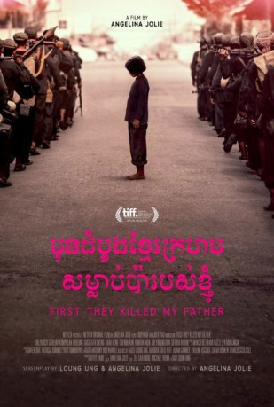

#7016 Der Weite Weg der Hoffnung
Alternativ: First They Killed My Father: A Daughter of Cambodia Remembers
 
 IMDB-Wertung: 7.2 / 10
IMDB-Wertung: 7.2 / 10  Metascore: 72
Metascore: 72 
Das fünfjährige Mädchen Loung (Sareum Srey Moch) hat das Pech, zu dem Zeitpunkt in Kambodscha aufzuwachsen, als die Khmer Rouge (Rote Khmer) an die Macht kommen. Unter ihrer 1975 beginnenden und vier Jahre andauernden grausamen Herrschaft erlebt Loung Schrecken und Grausamkeiten, die kein Kind je sehen sollte. In einem jungen Alter muss sie unvorstellbare Verluste hinnehmen und als Kindersoldatin ums nackte Überleben kämpfen.
Jahr: 2017
Dauer: 136 Minuten
FSK:
Land: USA Studio: NetflixTonspuren: DD5.1 - ,
Untertitel: Deutsch, Englisch,
Auflösung: 1080p (1920x1012) Größe: 11776 MB
Genre: Drama, Geschichte, Biographie
Regisseur:  Angelina Jolie
Angelina Jolie
Drehbuch: Loung Ung
Soundtrack:
Darsteller:
- Sareum Srey Moch als Loung Ung
- Phoeung Kompheak als Pa Ung
- Sveng Socheata als Ma Ung
- Mun Kimhak als Kim
- Heng Dara als Meng
- Khoun Sothea als Khouy
- Sarun Nika als Geak
- Run Malyna als Chaou
- Oun Srey Neang als Keav
- Horm Chhora als
- Mony Ros als
- Tharoth Sam als Khmer Rouge Leader
Datei: X:\2017(N-Z)\Weite Weg der Hoffnung, Der (2017, FSK, 1920x1012).mkv seit 17.09.2017
Festplatte: HD 2017(A-Z)-2018(A-F)
 Es gibt insgesamt 170 Filme in der Gruppe '2017(N-Z)'
Es gibt insgesamt 170 Filme in der Gruppe '2017(N-Z)'